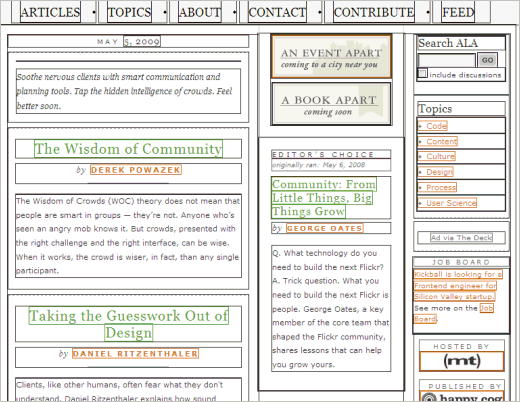

Modelo de caja
El modelo de cajas o "box model" es seguramente la característica más importante del lenguaje de hojas de estilos CSS, ya que condiciona el diseño de todas las páginas web. El modelo de cajas es el comportamiento de CSS que hace que todos los elementos de las páginas se representen mediante cajas rectangulares.
Las cajas de una página se crean automáticamente. Cada vez que se inserta una etiqueta HTML, se crea una nueva caja rectangular que encierra los contenidos de ese elemento. La siguiente imagen muestra las tres cajas rectangulares que crean las tres etiquetas HTML que incluye la página:

Las cajas se crean automáticamente al definir cada elemento HTML
Las cajas de las páginas no son visibles a simple vista porque inicialmente no muestran ningún color de fondo ni ningún borde.
La siguiente imagen muestra las cajas que forman la página web de http://www.alistapart.com/ después de forzar a que todas las cajas muestren su borde:
Cajas que forman la página alistapart.com
Los navegadores crean y colocan las cajas de forma automática, pero CSS permite modificar todas sus características. Cada una de las cajas está formada por seis partes, tal y como muestra la siguiente imagen:
Representación tridimensional del box model de CSS
(Esquema utilizado con permiso de http://www.hicksdesign.co.uk/boxmodel/) Las partes que componen cada caja y su orden de visualización desde el punto de vista del usuario son las siguientes:

Contenido (content): se trata del contenido HTML del elemento (las palabras de un párrafo, una imagen, el texto de una lista de elementos, etc.)
Relleno (padding): espacio libre opcional existente entre el contenido y el borde.
Borde (border): línea que encierra completamente el contenido y su relleno.
Imagen de fondo (background image): imagen que se muestra por detrás del contenido y el espacio de relleno.
Color de fondo (background color): color que se muestra por detrás del contenido y el espacio de relleno.
Margen (margin): separación opcional existente entre la caja y el resto de cajas adyacentes.
El relleno y el margen son transparentes, por lo que en el espacio ocupado por el relleno se muestra el color o imagen de fondo (si están definidos) y en el espacio ocupado por el margen se muestra el color o imagen de fondo de su elemento padre (si están definidos). Si ningún elemento padre tiene definido un color o imagen de fondo, se muestra el color o imagen de fondo de la propia página (si están definidos).
Si una caja define tanto un color como una imagen de fondo, la imagen tiene más prioridad y es la que se visualiza. No obstante, si la imagen de fondo no cubre totalmente la caja del elemento o si la imagen tiene zonas transparentes, también se visualiza el color de fondo. Combinando imagenes transparentes y colores de fondo se pueden lograr efectos gráficos muy interesantes.